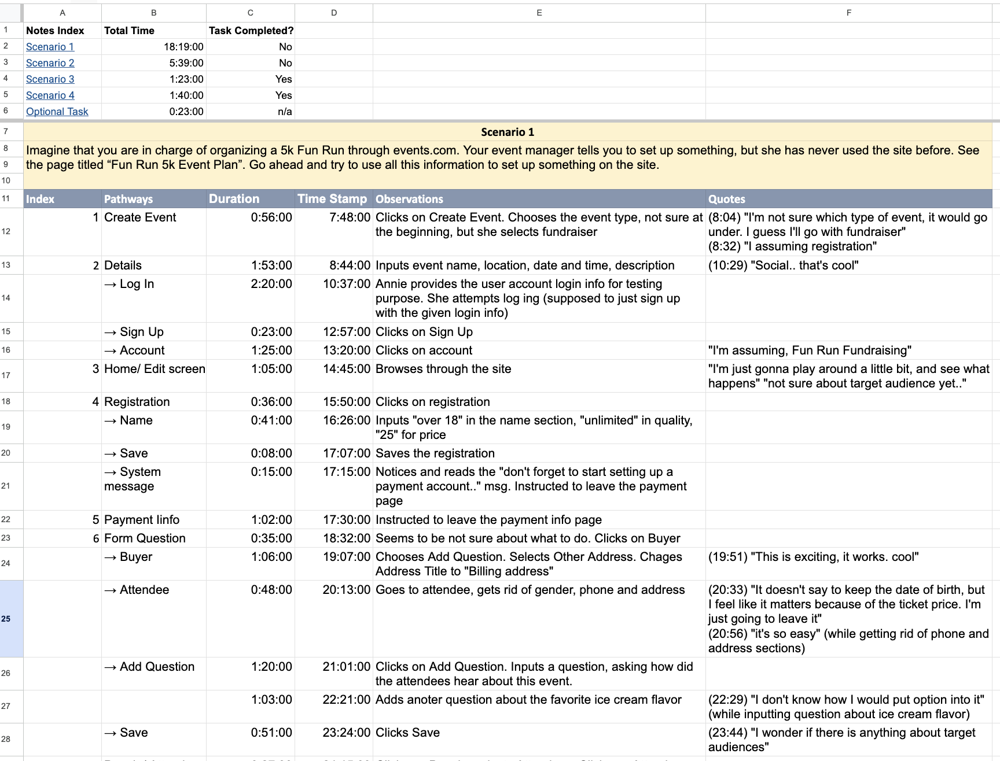

02 — The Research
No research team.
Built the methodology from scratch.
There was no dedicated research function. Every stage of the study had to be designed and run from scratch — not just facilitating sessions, but building the infrastructure that would make the findings usable by product and engineering without a translator between them.
Participant Recruitment
Identified and recruited participants across self-service user segments. Handled all communication, scheduling, and logistics independently — no coordinator, no ops support.
Script Writing
Wrote both remote and in-person usability scripts from scratch. Each script was structured around task completion and failure detection — not satisfaction ratings. The goal was to watch what users actually did, not what they said they would do.
Session Facilitation
Conducted remote sessions via appear.in and in-person sessions directly. Documented participant pathways step by step — each action timestamped, each observation noted, each verbatim quote captured alongside the screen state it came from.
Heuristic Audit
Ran a systematic heuristic evaluation across the full platform in parallel. Every violation catalogued by category and severity — giving the usability session findings a structural framework rather than a disconnected list.

Remote moderated session in progress
Participant navigating the event creation flow. Each session pathway was documented with timestamped steps, observations, and verbatim quotes.
"I'm not sure which type of event it would go under. I guess I'll go with fundraiser."
Event Type Selection — guessing instead of knowing
"It doesn't say to keep the date of birth, but I feel like it matters… I'm just going to leave it."
Attendee Form — ambiguous field, user accepting uncertainty
"I wonder if there is anything about target audiences."
Registration Setup — looking for guidance that doesn't exist

One participant's full pathway through Scenario 1. Each session produced documentation at this level of detail — the raw material for the findings spreadsheet.